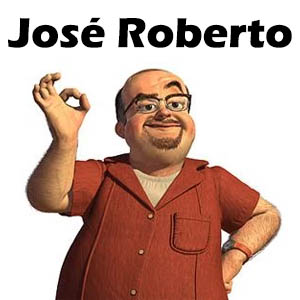

José Roberto, Professor
DD é uma das matérias do curos de Dsenvolvimento de sistemas, nela, aprendemos muitas coisas relacionadas a arte na WEB, como a criação de layouts, criação de imagens,
de logo-tipos, entre outras coisas.
O professor que nos dá essa matérias é o José Roberto, ele é um dos melhres professores, na minha opinião, tirando a cara de sério dele.
Por fim, posso concluir que essa matéria nos ajuda a tranformar códigos em artes visuais na hora em que formos criar nossos sites e projetos futuros.